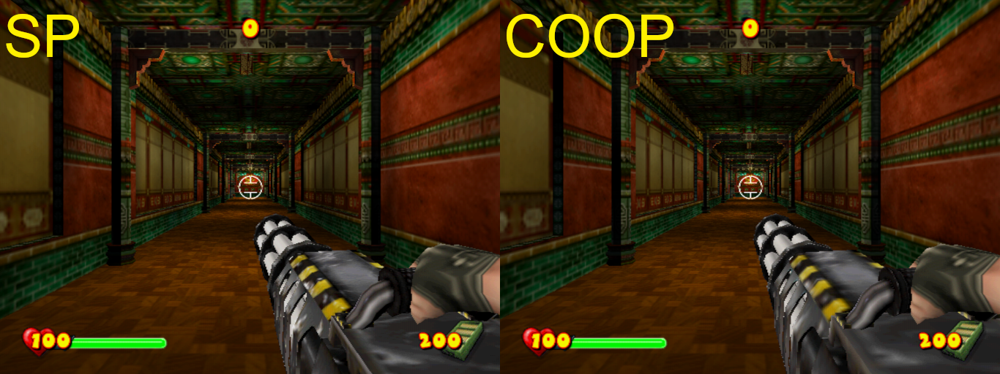
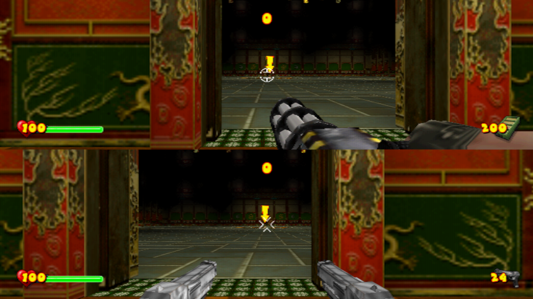
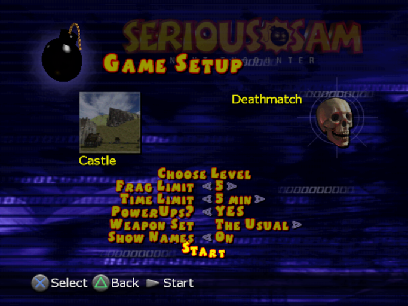

Addons / Improvements
Codes that improve gameplay experience.
480p
Forces 480p Progressive Scan.
60 FPS (by asasega; ported for PAL-E by YukiXXL)
Makes the game run at 60 FPS.
Alternative version of the code was kept for future reference and can be used if the current one doesn't work.
Enable single Deagle/Uzi
Enables switching between single or dual Deagles or Uzis.
Multiplayer model in Single Player
Makes multiplayer model appear in Single Player.

Get Medals on Easy Difficulty
Enable getting medals on Easy difficulty. It's even harder to get Gold than on Normal.
Don't restart from a Checkpoint in SP (like in COOP)
Don't go back to the checkpoint and just respawn and continue instead.
Prevent teleporting players in COOP
Like the title sas, the players won't be auto-teleported but this can make other player stuck.
Texture quality on all gamemodes
Enable the desired texture quality. The sharp ones which are used in SP may produce lags in COOP.
1 = Textures are blurred (COOP)
0 = Textures are sharp (SP)
Fake Byte. Used for stuff below. \/
Enable (1) for COOP like; Disable (0) for SP like.
In other words, if this code is enabled, any code below that is enabled will be COOP like; if the code is disabled, any code below that is enabled will be SP like.
- Pickup effects
- Ricochet bullets
Normally, in Single Player, Ricochet bullets get spawned but in COOP, they are replaced by 9mm. Don't know what's the reason for it but I guess the balancing? or performance because Ricochet tends to bounce around? Who knows. The effect can be easly seen on "The Tower of Confusion" after the very first fight.
- Get Medals
Get medals in COOP... or if Fake Byte is enabled, it will be disabled for both SP and COOP. When medal is awarded in COOP, it applies to both player profiles.
Remove letterbox on cutscenes
Removes black bars on cutscenes.
Enable female sounds for female models
Enables unused female sound set for female models which are: Cheerleader, Vampire and Nesbot.
Make a cool loading screen
Replace SamLogo video with Gotham games
Replace Main Menu music with Hidden music
Replaces the Main Menu music with the unused soundtrack.
Alternative Screen Mode
Enables alternative screen mode. Useful for widescreen with horizontal split-screen. Start the Split-Screen game twice to save it to the profile.
Reset to default
Resets it back to default. Start the Split-Screen game twice to save it to the profile.
ONLINE LEVELS IN OFFLINE CODES
ATTENTION!
If you want to enable the online levels in offline with best experience, use all the codes below + Enable Online in Offline.
After enabling, go into: Online, Host New Game; and open each gamemode for the code to apply for each gamemode. After that, choose "MultiPlayer" menu and enjoy.
If "LevelSet" has been saved to the Memory Card, then only the "OPTIONAL" codes are needed.
Enable Online levels in Offline
Enables the online-only levels into offline. Saves the "3" into "LevelSet" when each gamemode opens (except COOP). When autosave activates, the "LevelSet" is saved onto the memory card. This code breaks the showing of level names/icons (in Offline level stuff only).
Load Offline LevelSet in Online
Loads Level stuff from offline into online.
OPTIONAL! Fix for correctly showing Online levels in Offline
Change levels for Offline mode
Changes level for offline mode instead of online.
Load Online LevelSet instead of Offline
Loads level stuff from online instead of offline. This corrects the loading of level icons.
Alternative
Alternative version if the above doesn't work but this one breaks the COOP icon when COOP mode is selected.